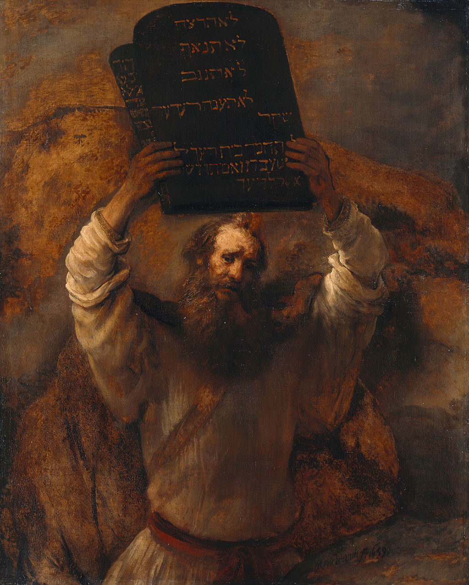

<head>
<meta charset="UTF-8" />
<meta name="keywords" content="drawing, painting" />
<meta name="description" content="drawings by Sunjy" />
<title>Sunjy</title>
<link rel="shortcut icon" type="image/x-icon" href="../../mImages/mCommon/favicon.ico" media="screen" />
<link rel="stylesheet" type="text/css" href="../../mCsses/mCommon/mCssA.css" />
<link rel="stylesheet" type="text/css" href="../../mCsses/mCommon/mCssB.css" />
<link rel="stylesheet" type="text/css" href="../../mCsses/mCommon/mCssC.css" />
<link rel="stylesheet" type="text/css" href="../../mCsses/mCommon/mCssD.css" />
<link rel="stylesheet" type="text/css" href="../../mCsses/mContent/mCssA.css" />
<link rel="stylesheet" type="text/css" href="../../mCsses/mContent/mCssB.css" />
<link rel="stylesheet" type="text/css" href="../../mCsses/mContent/mCssC.css" />
<link rel="stylesheet" type="text/css" href="../../mCsses/mContent/mCssD.css" />
</head>
<script type="text/javascript" src="../../mScripts/mContent/mContentAA.js" /></script>
<script type="text/javascript" src="../../mScripts/mContent/mContentAB.js" /></script>
<script type="text/javascript" src="../../mScripts/mContent/mContentAC.js" /></script>
<script type="text/javascript" src="../../mScripts/mContent/mContentAD.js" /></script>
<script type="text/javascript"></script> 
<script type="text/javascript">
document.write('<div class="mImgAbsolute"></div>');
/*
document.write('<p class="mFontSizeBColor" />From a white paper...</p>');
document.write('<table class="center"><tr><td>');
document.write('');
document.write('</td></tr></table>');
*/
</script>


<script type="text/javascript">
document.write('<p class="mFontSizeBColor" />Moses with the Tablets of the Law</p>');
document.write('<p class="mFontSizeSColor" />“Moses with the Tablets of the Law” by Rembrandt depicts Moses about to break the original two stone tablets inscribed with the Ten Commandments.<br><br>According to the biblical narrative, the first set of tablets were written by the finger of God. The tablets were smashed by Moses when he was enraged by the sight of the Children of Israel worshipping a golden calf.<br><br>The second set of tablets was later chiseled out by Moses and rewritten by God. According to the traditional teachings of Judaism, they were made of blue sapphire stone as a symbolic reminder of the sky.<br><br>According to Exodus, the tablets were stored in the Ark of the Covenant.<br><br>According to rabbinic tradition, the tablets were rectangles, with sharp corners, and this was the case in Christian art throughout the 1st millennium, drawing on Jewish iconography.<br><br>The rounded tablets appear in the Middle Ages, following in size and shape contemporary hinged writing tablets for taking notes with a stylus on a layer of wax on the insides.<br><br>For Michelangelo, they still have sharp corners, and the size found in rabbinic traditions. Later, artists such as Rembrandt tended to combine the rounded shape with the larger size.<br><br>In Rembrandt’s painting, Moses’s forehead is shining with the light of God. His raised elbows are also highlighted by the light to emphasize his action.<br><br>The abstract handling of the background, however, emphasizes the figure’s isolation.<br><br>The accurate Hebrew transcription shows Rembrandt’s characteristic attention to detail. In Jewish religious tradition, the arrangement of the commandments on the two tablets is interpreted in different ways.<br><br>Either each tablet contained five commandments or ten on one tablet and ten on the other. The second interpretation is compared to the diplomatic treaties of Ancient Egypt, in which a copy was made for each party.<br><br>The Quran states that tablets were given to Moses, without quoting their contents explicitly: “And We ordained laws for him in the tablets in all matters, both commanding and explaining all things.” (Quran 7:145)<br><br>Ten Commandments<br><br>The Ten Commandments include instructions to have no other gods before him, to honor one’s parents, and to keep the sabbath day holy, as well as prohibitions against idolatry, blasphemy, murder, adultery, theft, dishonesty, and coveting.<br><br>Different religious groups follow different traditions for interpreting and numbering them.<br><br>Most traditions of Christianity hold that the Ten Commandments have divine authority and continue to be valid, though they have different interpretations and uses of them.<br><br>Moses<br><br>Moses, according to the Hebrew Bible, was saved and subsequently adopted by an Egyptian princess.<br><br>Later in life, Moses became the leader of the Israelites and the lawgiver to whom the authorship of the Torah is traditionally attributed.<br><br>He is also an important prophet in Christianity, Islam, the Bahá’í Faith, and several other Abrahamic religions.<br><br>Rabbinical Judaism calculated a lifespan of Moses corresponding to 1391–1271 BCE. <br><br>In Islam, Moses is the most widely mentioned figure in the Quran and is recounted more than that of any other individual and is considered to be the first sharia law bearer prophet.<br></p>');
document.write('<table class="center" /><tr><td>');
document.write('<br>According to the biblical narrative, the first set of tablets were written by the finger of God. The tablets were smashed by Moses when he was enraged by the sight of the Children of Israel worshipping a golden calf.<br><br>The second set of tablets was later chiseled out by Moses and rewritten by God. According to the traditional teachings of Judaism, they were made of blue sapphire stone as a symbolic reminder of the sky.<br><br>According to Exodus, the tablets were stored in the Ark of the Covenant.<br><br>According to rabbinic tradition, the tablets were rectangles, with sharp corners, and this was the case in Christian art throughout the 1st millennium, drawing on Jewish iconography.<br><br>The rounded tablets appear in the Middle Ages, following in size and shape contemporary hinged writing tablets for taking notes with a stylus on a layer of wax on the insides.<br><br>For Michelangelo, they still have sharp corners, and the size found in rabbinic traditions. Later, artists such as Rembrandt tended to combine the rounded shape with the larger size.<br><br>In Rembrandt’s painting, Moses’s forehead is shining with the light of God. His raised elbows are also highlighted by the light to emphasize his action.<br><br>The abstract handling of the background, however, emphasizes the figure’s isolation.<br><br>The accurate Hebrew transcription shows Rembrandt’s characteristic attention to detail. In Jewish religious tradition, the arrangement of the commandments on the two tablets is interpreted in different ways.<br><br>Either each tablet contained five commandments or ten on one tablet and ten on the other. The second interpretation is compared to the diplomatic treaties of Ancient Egypt, in which a copy was made for each party.<br><br>The Quran states that tablets were given to Moses, without quoting their contents explicitly: “And We ordained laws for him in the tablets in all matters, both commanding and explaining all things.” (Quran 7:145)<br><br>Ten Commandments<br><br>The Ten Commandments include instructions to have no other gods before him, to honor one’s parents, and to keep the sabbath day holy, as well as prohibitions against idolatry, blasphemy, murder, adultery, theft, dishonesty, and coveting.<br><br>Different religious groups follow different traditions for interpreting and numbering them.<br><br>Most traditions of Christianity hold that the Ten Commandments have divine authority and continue to be valid, though they have different interpretations and uses of them.<br><br>Moses<br><br>Moses, according to the Hebrew Bible, was saved and subsequently adopted by an Egyptian princess.<br><br>Later in life, Moses became the leader of the Israelites and the lawgiver to whom the authorship of the Torah is traditionally attributed.<br><br>He is also an important prophet in Christianity, Islam, the Bahá’í Faith, and several other Abrahamic religions.<br><br>Rabbinical Judaism calculated a lifespan of Moses corresponding to 1391–1271 BCE. <br><br>In Islam, Moses is the most widely mentioned figure in the Quran and is recounted more than that of any other individual and is considered to be the first sharia law bearer prophet.<br>" />');
document.write('</td></tr></table>');
</script>


